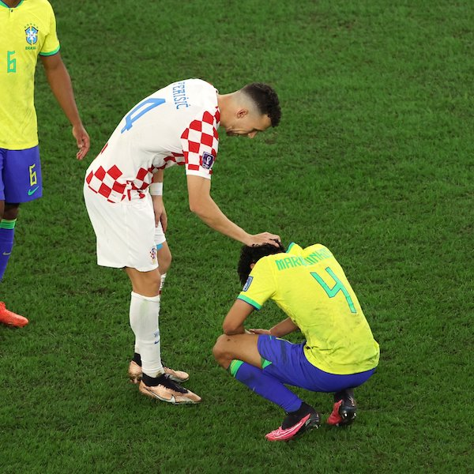

Copa do Mundo
 Fracasso Brasileiro
Fracasso Brasileiro

A Seleção Brasileira foi eliminada na fase de quartas-de-final da Copa do Mundo da Fifa de 2022, no Catar, perdendo na disputa de penalidades para a Seleção Croata de Futebol (em croata: “Hrvatski Nogometni Savez”), pelo placar agregado de 4 a 2, após o encerramento da partida pelo placar de 1 a 1.